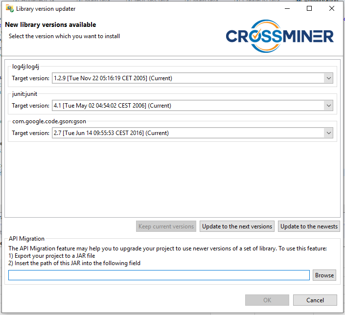
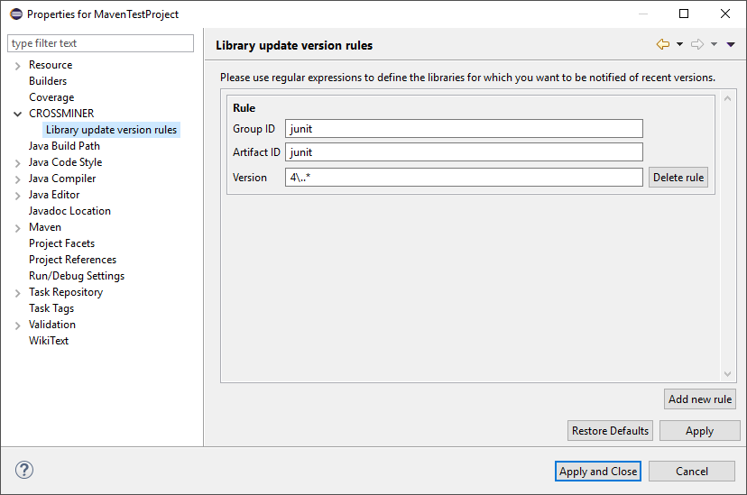
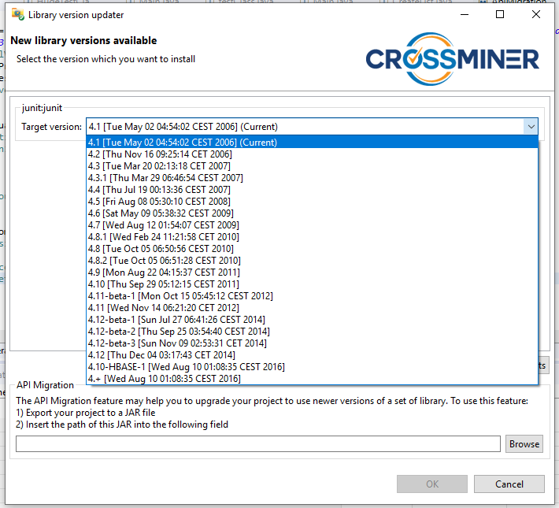
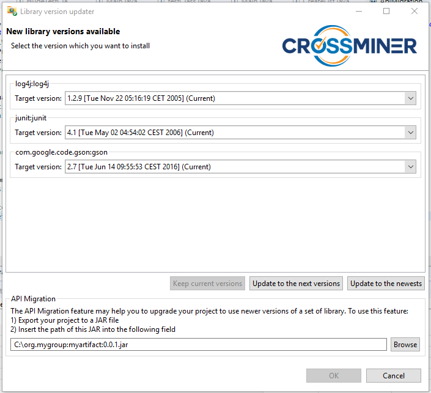
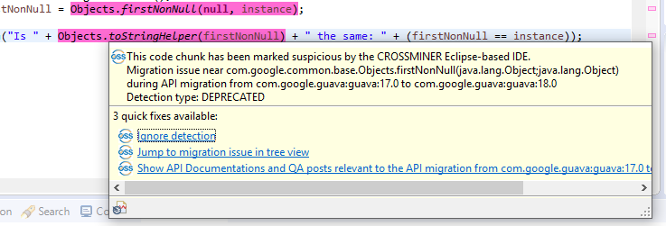
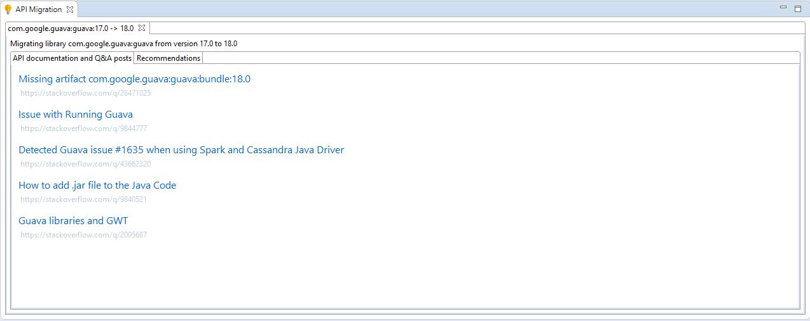

To update the libraries that are used in your Maven project use the Library version updater feature. For this, first you have to select your project in the Package explorer view, then in the context menu navigate to the CROSSMINER submenu and click on the "search updates for libraries" option. This will open the Library version updater dialog.

Library version updater - updater
The libraries that can be updated to a newer version are listed in the center of the dialog. The different versions can be selected from the dropdown menus and the libraries will be updated to the selected versions.
There are three buttons on the bottom, which can be used to quickly select the wanted versions. These buttons provide the functionality to select the currently used, the next available or the latest versions with a click.
After selecting the versions to be installed and accepting the confirmation dialogs, the selected versions of the libraries are going to be installed to your project.
The listed versions in the Library Version Updater can be filtered by creating rules in the Library update version rules property page that can be accessed by opening the context menu over your project, clicking on the Properties option and navigating under the CROSSMINER pages.
Any number of rules can be added, removed or edited in this page. To create a new rule click on the Add new rule button. A box will appear in the center of the page with three text fields. These fields are the Group ID, the Artifact ID and the Version. Each field can be filled with regular expressions and they are interpreted just the same way as in Java. If a text field has been leaved empty it will be interpreted as to match with every value.
The rules can be removed by clicking on the "Delete rule" button in the rule's box.

Library version rules
This property page and an example rule can be seen above. With this one rule we restrict the library version search to care only about the libraries with a group ID that matches with 'junit', an artifact ID, that matches with 'junit' and a version with a '4.' prefix.
The interpretation of the rules is the following:
if there are no rules at all, then no filtering will be applied.
After adding at least one rule, then the library versions will be tested against every rule until at least one of them is matching. If none of the rules matched a library version, then that one will not be seen among the available library versions. A filtered list of library versions with the previous rules can be seen on the following illustration.

Library version updater - filtered
The API Migration feature may help you to upgrade your project to use newer versions of the selected libraries. In order, to use this feature you have to provide the CROSSMINER Eclipse-based IDE an exported JAR file from your project. This jar file can be created by the the Eclipse's built-in jar export function. After the export has been finished, paste the file's absolute path to the field in the API Migration section on the Library Version Updater dialog, or you can use the Browse button next to the field to locate the file in your filesystem.

Library version updater - api migration
If you do not want to use the API Migration feature, just leave this field empty.
After the API Migration feature has loaded, the API Migration view is going to show the results.
If multiple libraries have been choosen to be updated, each of them will be displayed on it's own tab in the API Migration view. Inside each migration tab, there are two inner tabs, namely the 'API documentation and Q&A posts' and the 'Recommendations' tab.
On the Recommendations tab you can see the source code and API usage related issues and recommendations provided by the CROSSMINER API Migration feature. They are displayed in a tree, representing the hierarchical structure of your project. Elements of the tree with bold names represent suspicious elements of your project. For example, it can be a method that uses an API from the old version of the lib that is now broken.
Their direct children are groups of the types of the issues detected in them. For example, it can be DEPRECATED, which could mean that in our method there is a API call which has been made deprecated. To get the concrete migration issue, expand these type group tree elements. Their children are presented with red labels and they describe the issue that has been detected near the element. And the children of these issues in the tree are the occurences of these issues in our project. If it is possible, these occurences are going to be highlighted in your editor as well. Most of the migrational issues can be located easily by double clicking on the tree elements in the tree and if it is possible the Eclipse will navigate you to the marked location.
There is another type of recommendations, which is the 'Recommended code snippets' and they can also be found under the bold named tree elements. These are recommended code snippets that somehow could be relevant to the given method or type. By clicking on these snippets they can be shown on the right side of the migration tab. There you can examine and select parts of them.
On any of the tree elements can be a context menu opened containing operations to ignore a set of recommendations. After ignoring some of the elements they will be thrown away, so they will neither be displayed in the tree view nor in the editor by highlights.

API Migration - API Documentation and Q&A Posts
By hovering your mouse pointer over the highlighted parts of the source code in the editor a Quickfix menu can be opened with the following operations. The highlighted element can be ignored, this has the same effect as the previously described ignore operations in the tree view. The highlighted element can be shown in the tree view or the related API documentation and Q&A posts can be shown.

API Migration - API Documentation and Q&A Posts
On the API documentation and Q&A posts tab you can see some web pages, blog posts that can be relevant to you and useful during the migration process. By clicking on them they can opened in the web browser that is set in the preferences page.
By closing the API Migration view or the migration tab the migration process can be aborted.